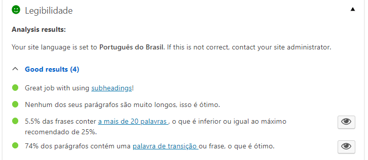

Posicionamento em pesquisa Google usando SEO
Veja algumas dicas interessantes sobre escolha da palavra chave, análise da concorrência e como escrever o texto para melhorar o SEO do site.
Posicionamento em pesquisa Google
Existem diversas formas de gerar tráfego para seu site, seja de forma paga ou gratuita. Para esta segunda opção o SEO é uma excelente alternativa, melhorando o posicionamento em pesquisa Google. De acordo com o site Mashable, o Google obtém 100 bilhões de pesquisa por mês. Mas como dar os primeiros passos para iniciar na otimização de buscas?
Escolha de palavras chave
O primeiro passo é a escolha de palavras chave que vão ter destaque no seu texto. Para isto, 2 critérios precisam ser avaliados:
- Qual o melhor termo para o assunto que quero usar?
- Qual a concorrência em relação a essa palavra chave?
Escolha do termo
Para a primeira questão, uma ferramenta interessante é a Ubersuggest. A ferramenta tem filtros de idioma, permitindo selecionar português do Brasil, e de escopo, avaliando pesquisa na web ou no YouTube, por exemplo.
O resultado da pesquisa inclui opções de palavras chave similares a que você usou, o volume de pesquisa de cada uma delas nos últimos 12 meses, o Custo Por Clique (CPC) e um índice de competição para cada um deles.
Análise da concorrência
Mas apenas a quantidade de busca de um termo não é suficiente para um bom posicionamento em pesquisa Google. Além de avaliar a demanda, é preciso avaliar a concorrência também. Para isso vamos usar a ferramenta MozBar, que é uma extensão do Chrome que mostra algumas métricas proprietárias para avaliar a relevância dos sites.
As métricas usadas pelo MozBar são a Page Authority (PA) e a Domain Authority (DA), que indicam a autoridade de uma página e do seu domínio. Essas métricas não são oficiais do Google, mas dão uma boa ideia de como é a concorrência para uma determinada palavra chave. Na imagem abaixo, por exemplo, é possível ver a PA e a DA dos vários sites retornados em uma busca pelo termo “plugin WordPress”.
Em resumo, mesmo que um determinado termo tenha um bom número de buscas, é preciso avaliar a concorrência por esse termo. Se os sites da primeira página de busca tiverem todos PAs acima de 20, dificilmente você vai conseguir no curto e médio prazo um bom posicionamento em pesquisa Google.
Escrevendo o texto
Depois de definido o termo, avaliando a quantidade de buscas e a concorrência, chega o momento de escrever o texto. O WordPress possui um plugin excelente que ajuda a escrever seus posts e páginas, usando a palavra chave escolhida e avaliando dinamicamente os critérios de SEO: o Yoast SEO.
Para fazer a instalação, buscar pela palavra chave “seo” no diretório de plugins do WordPress.
O plugin Yoast é um dos primeiros retornados nesta pesquisa. Ela possui mais de 1 milhão de instalações, 5 estrelas de avaliação (com mais de 22 mil avaliações), mantém atualizações constantes e é compatível com a última versão do WordPress.
Depois de instalado e ativado, o plugin habilita, tanto nos posts quanto nas páginas, uma área de análise de SEO. O objetivo é indicar critérios que podem melhorar o texto para um melhor posicionamento em pesquisa Google.
Legibilidade e palavras de transição
O Yoast também avalia a legibilidade do texto para ajudar no posicionamento em pesquisa Google. Este fator é muito importante para o SEO, para um bom posicionamento nas páginas de busca, como o Google, e até para melhorar a usabilidade do site.

Em relação a esse ponto uma questão que as vezes gera dúvidas é sobre as palavras de transição. O mínimo recomendado pelo plugin é que 30% das frases do seu texto contenham essas palavras. Mas quais são elas? Confira abaixo a lista de palavras que podem dar ao seu conteúdo ritmo e fluidez.
Lista de palavras de transição com 1 única palavra
- ademais
- afinal
- aliás
- analogamente
- anteriormente
- assim
- certamente
- conforme
- conquanto
- contudo
- decerto
- embora
- enfim
- enquanto
- então
- entretanto
- eventualmente
- igualmente
- inegavelmente
- inesperadamente
- mas
- outrossim
- pois
- porquanto
- porque
- portanto
- posteriormente
- precipuamente
- primeiramente
- primordialmente
- principalmente
- salvo
- semelhantemente
- similarmente
- sobretudo
- surpreendentemente
- todavia
Lista de palavras de transição com 2 ou mais palavras:
- a fim de
- a fim de que
- a menos que
- a princípio
- a saber
- acima de tudo
- ainda assim
- ainda mais
- ainda que
- além disso
- antes de mais nada
- antes de tudo
- antes que
- ao mesmo tempo
- ao passo que
- ao propósito
- apesar de
- às vezes
- assim como
- assim que
- assim sendo
- assim também
- bem como
- com a finalidade de
- com efeito
- com o fim de
- com o intuito de
- com o propósito de
- com toda a certeza
- como resultado
- como se
- da mesma forma
- de acordo com
- de conformidade com
- de fato
- de maneira idêntica
- de tal forma que
- de tal sorte que
- depois que
- desde que
- dessa forma
- dessa maneira
- desse modo
- do mesmo modo
- é provável
- em conclusão
- em contrapartida
- em contraste com
- em outras palavras
- em primeiro lugar
- em princípio
- em resumo
- em seguida
- em segundo lugar
- em síntese
- em suma
- em terceiro lugar
- em virtude de
- finalmente agora atualmente
- isto é
- já que
- logo após
- logo depois
- logo que
- mesmo que
- não apenas
- nesse hiato
- nesse ínterim
- nesse meio tempo
- nesse sentido
- no entanto
- no momento em que
- ou por outra
- ou seja
- para que
- pelo contrário
- por analogia
- por causa de
- por certo
- por conseguinte
- por conseqüência
- por exemplo
- por fim
- por isso
- por mais que
- por menos que
- por outro lado
- posto que
- se acaso
- se bem que
- seja como for
- sem dúvida
- só para exemplificar
- só para ilustrar
- só que
- sob o mesmo ponto de vista
- talvez provavelmente
- tanto quanto
- uma vez que
- visto que
Lista de palavras de transição dividida em partes:
- não apenas … , como também …
- não só … , bem como …
- não só … , como também …
- não só … , mas também …
- ora … , ora …
- ou … , ou …
- quer … , quer …
Nos vídeos abaixo é possível ver mais detalhes dos pontos apresentados neste post. Não esquece de assinar o canal e curtir os vídeos, caso queira ver mais conteúdo como este.